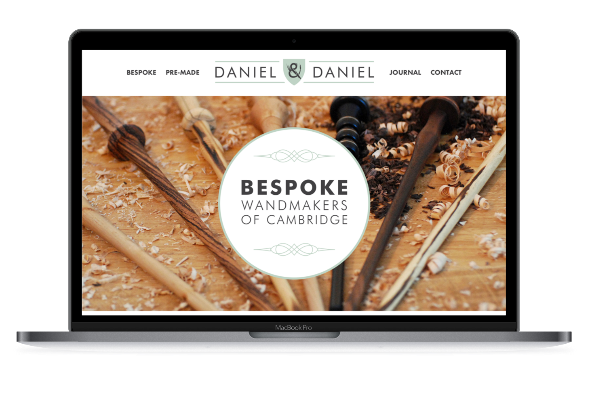

Cambridge Wandmakers (2016)
Cambridge Wandmakers are a small start up company who approached Chameleon for help not only with their website but also with setting up their branding.
The aim was to serve a niche market selling custom made Wands, hopefully appealing to Harry Potter fans.
I enjoyed building this website- I aimed to use SVG’s and high quality images wherever possible to give the website a “retina” look. In addition, I had a lot of fun adding some unique animations- such as the movement of wands on the sales pages when hovering over them.
Cambridge Wandmakers was built and integrated into the Wordpress CMS, and uses WooCommerce to achieve e-commerce functionality mostly using Paypal as a payment gateway option.
It is our understanding the Cambridge Wandmakers were able to go on to sell a number of their high quality, hand crafted Wands.
